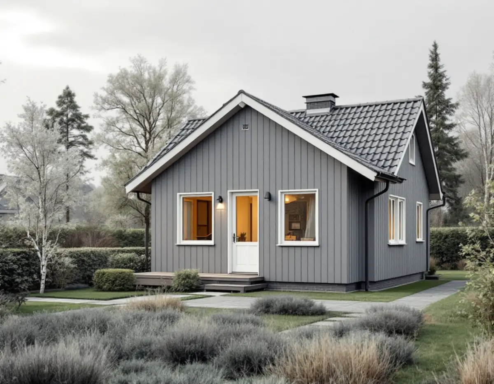
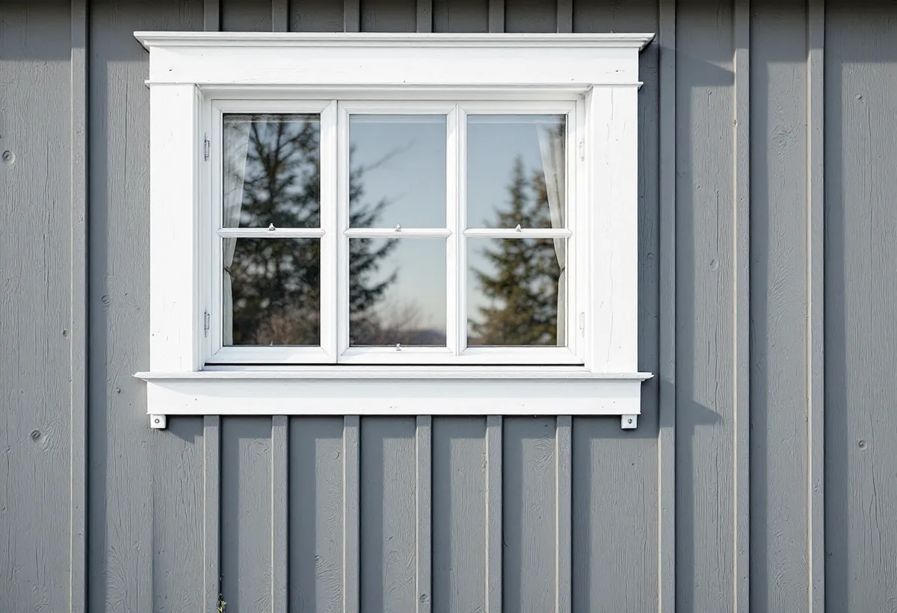

Besiktning av fasaden
Vi går igenom beklädnad, sockel och fönsteranslutningar och noterar material som behöver provas.
Har villan i Huddinge fasadskivor av cementfiber från 1940- eller 50-talet är första frågan inte vilken panel som ska upp, utan vad skivorna innehåller. Geal Entreprenad AB renoverar fasader i hela kommunen och samordnar provtagning, ställning, snickeri, plåt och målning, med gratis platsbesök och skriftligt kostnadsförslag.

Boverket beskriver hur många fasader under 1940- och 1950-talen kläddes med cementfiberplattor som innehöll asbestfibrer. Plattorna är nästan underhållsfria och behöver bara tvättas emellanåt så länge de inte skadas. De förbjöds på 1970-talet, sedan det konstaterats att asbestfibrer kan orsaka cancer, och fibrerna kan frigöras när plattorna bearbetas, till exempel om man borrar i dem.
Arbetsmiljöverket råder att utgå från att alla byggnader som uppförts fram till 1982, då asbest förbjöds i Sverige, kan innehålla asbest. Även senare hus kan i vissa fall ha det, eftersom produkter fanns kvar i lager eller importerades. Bland Huddinges villor och grupphus från folkhemsåren och rekordåren finns alltså många där en fasadrenovering bör börja med ett materialprov.
Proverna ska skickas till ett laboratorium som har tillstånd att hantera asbesthaltigt material. Att undersöka och ta prover kräver inget tillstånd från Arbetsmiljöverket, men det gör själva rivningen. Hittar man under arbetet dolda material som inte har analyserats, till exempel äldre skivor bakom en senare panel, ska prover tas och rivningen avbrytas tills svaret har kommit.

Enligt Arbetsmiljöverket krävs tillstånd för att ett företag ska få riva eller sanera material som innehåller asbest, inomhus som utomhus, och rivning av asbesthaltigt material på tak eller fasad nämns uttryckligen. Ansökan ska lämnas åtta veckor innan arbetet ska börja, och de som leder och deltar i rivningen ska ha gått en utbildning som är specifik för rivning och sanering av asbest.
Förarbete, omhändertagande av avfallet och städning efteråt räknas också som rivning och sanering, och asbesthaltigt avfall ska till asbestdeponi. Området där rivningen pågår ska vara avspärrat och skyltat. Vi planerar därför fasadrenoveringen i två steg: först tas plattorna ner av ett företag som har tillstånd, sedan bygger vi upp den nya fasaden med vindskydd, läkt och beklädnad.
I Stockholms stads vägledning för småhusområden konstateras att det numera finns fasadskivor utan asbest, vilket gör det möjligt att behålla uttrycket på hus där skivorna är en del av arkitekturen. Alternativet är träpanel, och det valet hänger ihop med lovfrågan längre ned.
Kommunens kulturmiljöprogram beskriver fritidshusområden från 1950–80-talen där stugorna är monteringsfärdiga hus i ett plan med liggande fjällpanel och sadeltak. Rådet för dessa områden är att fasadmaterial, volym och takvinkel bör värnas. För sportstugeområdena i stort skriver programmet att fasadmaterialet bör vara trä, som är tidstypiskt för sådana områden.
Programmet berättar också att en del ägare tilläggsisolerade och byggde om sina stugor när fritidsområdena permanentades. Byts fjällpanelen i samband med en sådan isolering är det värt att behålla den liggande profilen, så att stugan fortsätter att höra ihop med grannhusen.
Boverket skriver att man ska undersöka om fasadens konstruktion har fuktskador innan man tilläggsisolerar, och åtgärda orsaken till mögel eller röta först. I ett äldre fritidshus med enkel stomme är det ofta väggens nederkant och partierna runt fönstren som visar hur det står till. Mer om att isolera uppåt finns under vindsisolering.
Huddinge kommun skriver att du inte behöver bygglov för att renovera fasaden när du byter befintligt material mot samma sorts material med samma färg. Att ändra utseendet på ett en- eller tvåbostadshus är också lovfritt, så länge byggnaden eller området inte är kulturhistoriskt värdefullt och detaljplanen inte kräver lov. I värdefulla miljöer krävs bygglov, och kommunens webbkarta visar om byggnaden ligger inom ett kulturmiljöområde.
Ett byte från cementfiberskivor till träpanel är alltså ett materialbyte som kan kräva lov i ett kulturmiljöområde. Är du osäker kan du söka frivilligt bygglov och få ett skriftligt besked; kommunen handlägger det som en vanlig ansökan och tar ut en avgift. Påverkas byggnadens bärande delar väsentligt krävs dessutom en anmälan och ett startbesked.
Kommunen påminner också om att en ändring som inte kräver lov ändå ska vara anpassad till hur området ser ut och till byggnadens speciella karaktär, till exempel husets ålder. På en villa från 1950-talet kan det tala för en ny beklädnad som liknar den gamla i format och kulör.
Vi går igenom beklädnad, sockel och fönsteranslutningar och noterar material som behöver provas.
Misstänkta skivor provas och analyseras innan något bearbetas.
Ska fasadmaterialet bytas stämmer vi av kommunens webbkarta och detaljplanen.
Sanering, ny beklädnad, isolering och målning står som egna poster.
Asbesthaltigt material rivs av ett företag med tillstånd, därefter monteras vindskydd, läkt och ny fasad.
Fasaden ytbehandlas, bleck och detaljer kompletteras och vi går igenom resultatet.
Att sanera asbest i samband med byggarbete, byta och reparera fasader och tilläggsisolera räknas som rotarbete i ett småhus. Att mäta asbest ger däremot inget avdrag. Avdraget är 30 procent av arbetskostnaden, högst 50 000 kr per person och år, och högst 75 000 kr när rot och rut läggs ihop.
Material ingår inte i underlaget för avdraget. Geal drar avdraget direkt på fakturan.
Om fasaden innehåller asbest och hur stor yta som ska saneras, vilket material den nya fasaden ska ha, om väggen ska tilläggsisoleras och hur fönster och sockel påverkas. Husets höjd och tomtens lutning styr hur mycket ställning som behövs. Platsbesöket är gratis och du får ett skriftligt kostnadsförslag.
Puts, panel och tilläggsisolering.
Fasadrenovering i Stockholm →Takbyte, takbesiktning och plåtarbeten.
Takläggare i Huddinge →Stuvsta, Snättringe och Skogås.
Takrenovering i Huddinge →Fasader, fönster och invändig målning.
Målare i Huddinge →Nya golv och slipning.
Golvläggare i Huddinge →Altan, dörrar och snickerier.
Snickare i Huddinge →Grannar, tomtgräns och lovärendet.
Byggföretag i Huddinge →Nytt trä i en gammal fasad.
Fasadmålning i Huddinge →Egnahem, grupphus och 70-talsvillor.
Fönsterbyte i Huddinge →Okopplade bågar, tätning och lagning av bottenstycken.
Fönsterrenovering i Huddinge →Slipa golvet och byt ytbehandling.
Golvslipning i Huddinge →Grupphus, egnahem och stugor.
Köksrenovering i Huddinge →Rännor, dagvatten och brutna tak.
Plåtslagare i Huddinge →Tyngre tak, stugor och landsbygd.
Takbyte i Huddinge →Ny tapet på lagad spännpapp.
Tapetsering i Huddinge →Råd för tre epoker av småhus.
Tillbyggnad i Huddinge →Rekordårens hus inifrån och ut.
Totalrenovering i Huddinge →